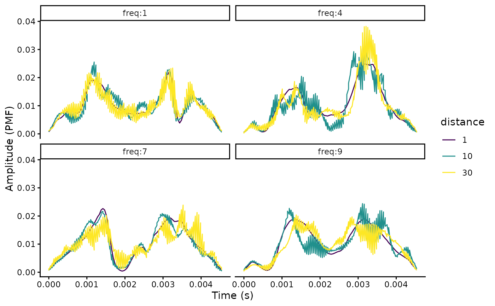

blur_ratio measures blur ratio in sounds referenced in an extended selection table.
Arguments
- X
The output of
set_reference_soundswhich is an object of class 'data.frame', 'selection_table' or 'extended_selection_table' (the last 2 classes are created by the functionselection_tablefrom the warbleR package) with the reference to the test sounds . Must contain the following columns: 1) "sound.files": name of the .wav files, 2) "selec": unique selection identifier (within a sound file), 3) "start": start time and 4) "end": end time of selections, 5) "bottom.freq": low frequency for bandpass, 6) "top.freq": high frequency for bandpass, 7) "sound.id": ID of sounds used to identify counterparts across distances and 8) "reference": identity of sounds to be used as reference for each test sound (row). Seeset_reference_soundsfor more details on the structure of 'X'.- cores
Numeric vector of length 1. Controls whether parallel computing is applied by specifying the number of cores to be used. Default is 1 (i.e. no parallel computing).
- pb
Logical argument to control if progress bar is shown. Default is
TRUE.- env.smooth
Numeric vector of length 1 determining the length of the sliding window (in amplitude samples) used for a sum smooth for amplitude envelope calculation (used internally by
env). Default is 200.- envelopes
Logical to control if envelopes are returned (as attributes, 'attributes(X)$envelopes'). Default is
FALSE.- hop.size
A numeric vector of length 1 specifying the time window duration (in ms). Default is 11.6 ms, which is equivalent to 512 wl for a 44.1 kHz sampling rate. Ignored if 'wl' is supplied.
- wl
a vector with a single even integer number specifying the window length of the spectrogram, default is
NULL. If supplied, 'hop.size' is ignored. Odd integers will be rounded up to the nearest even number.- ovlp
Numeric vector of length 1 specifying the percentage of overlap between two consecutive windows, as in
spectro. Default is 70. Used for applying bandpass filtering.- n.samples
Numeric vector of length 1 specifying the number of amplitude samples to use for representing amplitude envelopes. Default is 100. If null the raw amplitude envelope is used (note that this can result in high RAM memory usage for large data sets). Amplitude envelope values are interpolated using
approx.- path
Character string containing the directory path where the sound files are found. Only needed when 'X' is not an extended selection table. If not supplied the current working directory is used.
Value
Object 'X' with an additional column, 'blur.ratio', containing the computed blur ratio values. If envelopes = TRUE the output would include amplitude envelopes for all sounds as attributes ('attributes(X)$envelopes').
Details
Blur ratio measures the degradation of sound as a change in sound power in the time domain as described by Dabelsteen et al (1993). Low values indicate low degradation of sounds. The function measures the blur ratio on sounds in which a reference playback has been re-recorded at different distances. Blur ratio is measured as the mismatch between amplitude envelopes (expressed as probability mass functions) of the reference sound and the re-recorded sound. By converting envelopes to probability mass functions the effect of energy attenuation is removed, focusing the analysis on the modification of the envelope shape. The function compares each sound to the corresponding reference sound within the supplied frequency range (e.g. bandpass) of the reference sound ('bottom.freq' and 'top.freq' columns in 'X'). The 'sound.id' column must be used to tell the function to only compare sounds belonging to the same category (e.g. song-types). Two methods for setting the experimental design are provided. All wave objects in the extended selection table must have the same sampling rate so the length of envelopes is comparable.
References
Dabelsteen, T., Larsen, O. N., & Pedersen, S. B. (1993). Habitat-induced degradation of sound signals: Quantifying the effects of communication sounds and bird location on blur ratio, excess attenuation, and signal-to-noise ratio in blackbird song. The Journal of the Acoustical Society of America, 93(4), 2206.Araya-Salas, M. (2020). baRulho: baRulho: quantifying degradation of (animal) acoustic signals in R. R package version 1.0.2
See also
envelope_correlation, spectrum_blur_ratio
Other quantify degradation:
detection_distance(),
envelope_correlation(),
plot_blur_ratio(),
plot_degradation(),
set_reference_sounds(),
signal_to_noise_ratio(),
spcc(),
spectrum_blur_ratio(),
spectrum_correlation(),
tail_to_signal_ratio()
Author
Marcelo Araya-Salas (marcelo.araya@ucr.ac.cr)
Examples
{
# load example data
data("test_sounds_est")
# add reference to X
X <- set_reference_sounds(X = test_sounds_est)
blur_ratio(X = X)
# using method 2
X <- set_reference_sounds(X = test_sounds_est, method = 2)
blur_ratio(X = X)
# get envelopes
br <- blur_ratio(X = X, envelopes = TRUE)
envs <- attributes(br)$envelopes
# make distance a factor for plotting
envs$distance <- as.factor(envs$distance)
# plot
rlang::check_installed("ggplot2")
library(ggplot2)
ggplot(envs, aes(x= time, y = amp, col = distance)) +
geom_line() + facet_wrap(~ sound.id) +
scale_color_viridis_d() +
labs(x = "Time (s)", y = "Amplitude (PMF)") +
theme_classic()
}
#> Computing amplitude envelopes (step 1 out of 2):
#> Computing blur ratio (step 2 out of 2):
#> Computing amplitude envelopes (step 1 out of 2):
#> Computing blur ratio (step 2 out of 2):
#> Computing amplitude envelopes (step 1 out of 3):
#> Computing blur ratio (step 2 out of 3):
#> Saving envelopes (step 3 out of 3):
